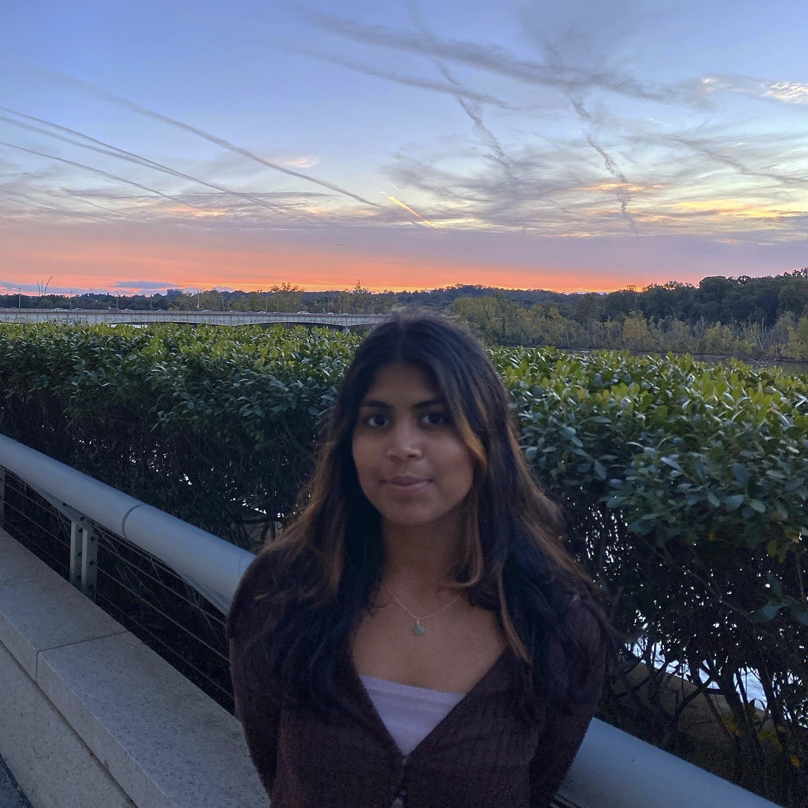

I am an undergraduate student at the University of Maryland-College Park exploring my interests in the social sciences, journalism, and data.
As a journalism and government and politics double major with a minor in geographic information science (GIS), I'm hoping to prepare myself for a career involving data-driven skills in investigative journalism and research.
Manage social media accounts and engage city residents on
local news.
Drive traffic to website.
Write digital exclusive features.
Wrote and researched narrative investigative features on a
months-long related to racial terror and lynchings in Atlanta,
Georgia.
Pitch and write stories related to city and campus development contribute to breaking reporting.
Contribute to breaking reporting.
Maintain relationships with key sources, including city planners, developers and city and county council members.
Pitch, research, and write relevant local news features.
Cover weekly city council meetings.
Investigate council decisions and impact on community.
Research effects of University of Maryland expansion on housing affordability in College Park.
Explore existing urban development scholarship and American Community Survey data.
Analyze data with R; Present findings at academic showcase to
faculty and students.
Teach children, teenagers, and adults fundamentals of water safety.
Supervise and mentor newer and inexperienced instructors.
Serve as head undergraduate liaison between college leadership and students.
Pioneer monthly newsletter program.
Pursue and implement initiatives to better the student experience
(ex: alumni panels and mentor databases).
Strategize and communicate with undergraduate program directors and committee members.
Assist in logistic organization of a national Bollywood-fusion competition attended by over 250 people
Direct communication between board members and competing teams.
Collaborate extensively with local businesses